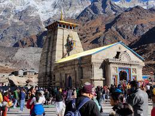
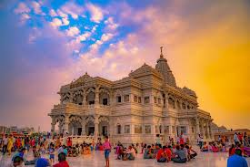
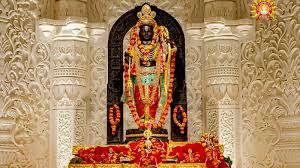
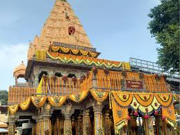
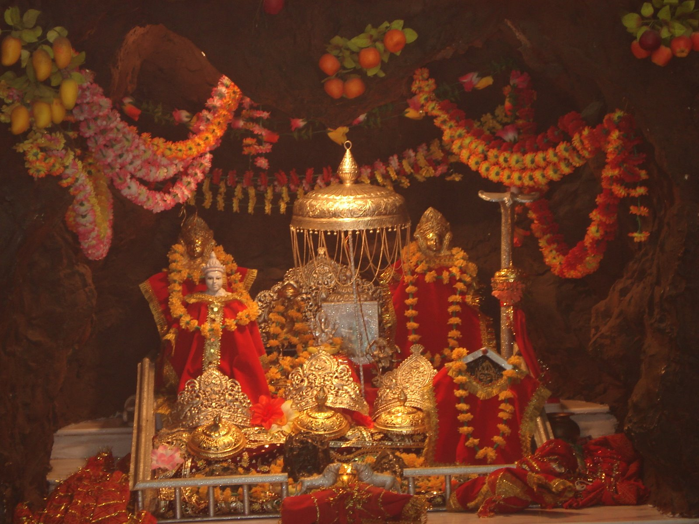

Kashi Vishwanath
The Kashi Vishwanath Temple is one of the most famous Hindu temples dedicated to Lord Shiva. It is located in Varanasi, Uttar Pradesh, India.

Kedarnath
Kedarnath is a town in the Indian state of Uttarakhand and is known for the Kedarnath Temple, dedicated to Lord Shiva.

Mathura
Mathura is a city in Uttar Pradesh, India. It is the birthplace of Lord Krishna and is considered a sacred city in Hinduism.

Ram Mandir
The Ram Mandir in Ayodhya is dedicated to Lord Rama. It is a significant site for Hindu pilgrims.

Ujjain
Ujjain is an ancient city in Madhya Pradesh, India, known for the Mahakaleshwar Temple, dedicated to Lord Shiva.

Vaishno Devi
Vaishno Devi is a famous Hindu temple dedicated to Goddess Vaishno Devi, located in the Trikuta Mountains in Jammu and Kashmir, India.